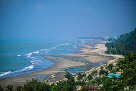

Cox's Bazar is a city, fishing port, tourism centre, and
district headquarters in southeastern Bangladesh. It is
famous mostly for its long natural sandy beach. It is
located 150 km (93 mi) south of the city of Chittagong.
Cox's Bazar is also known by the name Panowa, which
translates literally as "yellow flower". Another old
name was "Palongkee". It is the longest sea beach in the
world.
See more..
-wikipedia
Most popular turist place in Bangladesh
Cox-Bazer

Sajek Valley, Rangamati.

Sajek Valley is an emerging tourist spot in
Bangladesh situated among the hills of the Kasalong
range of mountains in Sajek union, Baghaichhari
Upazila in Rangamati District.[3] The valley is
1,476 feet (450 m) above sea level.[4] Sajek valley
is known as the Queen of Hills & Roof of Rangamati.
Sajek valley is known for its natural environment
and is surrounded by mountains, dense forest, and
grassland hill tracks. Many small rivers flow
through the mountains among which the Kachalong and
the Machalong are notable. On the way to Sajek
valley, one has to cross the Mayni range and the
Mayni river. The road to Sajek has high peaks and
falls.
See more..
-Wikipedia
Jaflong, Shylet.
Jaflong is a hill station and tourist destination in
the Division of Sylhet, Bangladesh. It is located in
Gowainghat Upazila of Sylhet District and situated
at the border between Bangladesh and the Indian
state of Meghalaya, overshadowed by subtropical
mountains and rainforests. It is known for its stone
collections and is home of the Khasi tribe.
Jaflong is a tourist spot in Sylhet division. It is
about 60 km from Sylhet town and takes two hours
drive to reach there. Jaflong located amidst tea
gardens and hills. It is situated beside the river
Sari in the lap of Hill Khashia.
-Wikipedia